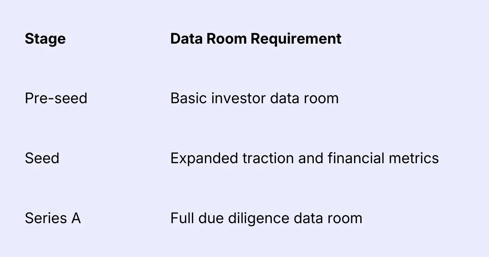

If you're preparing to raise capital, one of the most important assets investors will evaluate is your startup data room.
A well-structured fundraising data room allows investors to quickly understand your business, verify claims, and complete due diligence efficiently. It can significantly accelerate the fundraising process and increase investor confidence.
On the other hand, a poorly prepared data room is one of the most common reasons investors lose interest during early conversations.
This guide explains exactly what a startup data room is, why it matters, and the complete fundraising data room checklist founders should prepare before approaching investors.
What Is a Startup Data Room?
A startup data room is a secure repository of documents that investors review when evaluating your company during fundraising.
It typically contains key materials related to:
• financial performance
• business strategy
• product development
• legal structure
• market positioning
• customer traction
Investors use this information to conduct due diligence before making an investment decision.
For founders, the data room acts as a single source of truth about the company.
Why Investors Ask for a Data Room
When venture capitalists evaluate startups, they look for signals that the company is organized, transparent, and capable of scaling.
A well-structured fundraising data room helps investors:
• verify traction claims
• assess financial discipline
• evaluate product defensibility
• understand the founding team
• identify potential risks
More importantly, it reduces friction during due diligence.
Startups that provide structured documentation often move through the investment process faster.
When Should You Build Your Startup Data Room?
The best time to prepare your fundraising data room is before you start outreach to investors.
Most experienced founders prepare a data room during the investor readiness phase, which comes after validating the idea but before actively pitching VCs.
Typical timing:

The Complete Startup Data Room Checklist
Below is a founder-friendly fundraising data room checklist used by many venture investors.
1. Company Overview Documents
These documents give investors a quick understanding of your business.
Include:
• Pitch deck
• Company one-pager
• Product overview
• Vision and mission statement
• Company history timeline
Your pitch deck should usually be the first document investors see.
2. Product Information
Investors want to understand how your product works and whether it solves a meaningful problem.
Include:
• Product demo video
• Product roadmap
• Technology architecture overview
• Key product features
• Screenshots or UI walkthroughs
If you are building a technical product, a short technical architecture document is extremely useful.
3. Market and Competitive Landscape
This section helps investors evaluate the size and opportunity of the market.
Include:
• Total Addressable Market (TAM) analysis
• Customer segments
• Industry research reports
• Competitive landscape analysis
• Positioning vs competitors
Clear positioning is often a strong signal that founders deeply understand their market.
4. Financial Documents
Financial transparency is one of the most important aspects of a startup fundraising data room.
Include:
• Financial model (3–5 year projections)
• Historical financial statements
• Revenue breakdown
• Unit economics
• Customer acquisition costs
• Gross margins
Investors will closely evaluate assumptions in your financial model.
5. Traction and Growth Metrics
Metrics help investors validate whether the product is gaining adoption.
Include:
• Monthly revenue growth
• User growth charts
• Retention metrics
• Cohort analysis
• Customer acquisition channels
• Key performance indicators
For SaaS startups, investors often look for:
• Monthly Recurring Revenue (MRR)
• Net revenue retention
• Churn rate
6. Customer and Case Study Evidence
Customer proof significantly strengthens investor confidence.
Include:
• Customer testimonials
• Case studies
• Customer logos
• Key partnerships
• Letters of intent (LOIs)
Even early-stage startups should try to demonstrate some form of real market validation.
7. Legal and Corporate Documents
Investors must verify the legal structure of the company before investing.
Include:
• Company incorporation documents
• Cap table
• Shareholder agreements
• Board resolutions
• Intellectual property ownership
• Employment agreements
• ESOP documentation
Your cap table is one of the most critical documents in the data room.
8. Team and Hiring Plans
Investors invest in teams as much as ideas.
Include:
• Founder bios
• Leadership team profiles
• Hiring plan for the next 12–24 months
• Organizational structure
• Advisory board details
Strong teams often highlight previous startup or domain experience.
9. Fundraising Details
Investors also want clarity on the current fundraising round.
Include:
• Amount being raised
• Use of funds
• Target milestones
• Runway projections
• Valuation expectations
Transparency about the funding round helps avoid confusion later in negotiations.
How to Structure Your Startup Data Room
The structure of your data room should make it easy for investors to navigate.
Typical folder structure:
1. Company Overview
2. Product & Technology
3. Market & Competition
4. Financials
5. Metrics & Growth
6. Customers
7. Legal Documents
8. Team
9. Fundraising
Most founders host their data room on platforms such as:
- Google Drive
- Notion
- Dropbox
- dedicated virtual data room platforms
Clarity and organization matter more than the tool itself.
Best Practices for a High-Quality Fundraising Data Room
Investors often evaluate hundreds of startups. A well-organized data room makes your company easier to assess.
Follow these best practices:
Keep Documents Investor-Ready
Every document should be clear, professional, and concise.
Use Clear Naming Conventions
Example:
Financial_Model_2026.xlsx
Cap_Table_Seed_Round.pdf
Avoid Overloading Investors
Include only relevant information.
Too many documents can slow down the review process.
Update Regularly
As metrics change, ensure the data room stays current.
Common Data Room Mistakes Founders Make
Many startups lose investor momentum because of poorly prepared documentation.
Common mistakes include:
- incomplete financial models
- outdated traction metrics
- missing legal documentation
- messy folder structures
- inconsistent data across documents
A clean data room reflects strong operational discipline.
How a Startup Investor Matching Platform Can Help
Preparing a data room is only one part of fundraising.
Founders also need to connect with the right investors.
Startup investor matching platforms help founders:
- identify relevant investors
- receive fundraising coaching
- prepare due diligence materials
- streamline investor introductions
These platforms act as a bridge between founders and venture capital networks.
Final Thoughts
Building a strong startup data room is one of the most important steps in preparing for fundraising.
It helps investors quickly understand your business, validate key metrics, and move through due diligence faster.
Before approaching venture capital firms or angel investors, ensure your fundraising data room checklist includes:
- financial models
- traction metrics
- customer validation
- legal documentation
- team profiles
- fundraising details
Startups that prepare thoroughly often experience faster fundraising cycles and stronger investor confidence.
If you're preparing to raise capital, take the time to build a structured data room. It can make the difference between a long, uncertain fundraising process and a successful investment round.